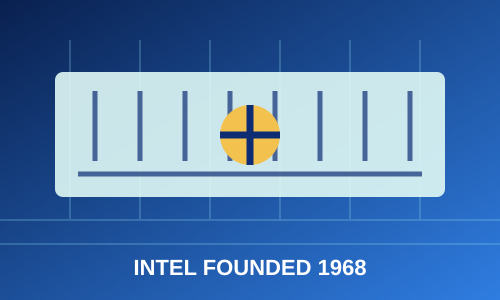
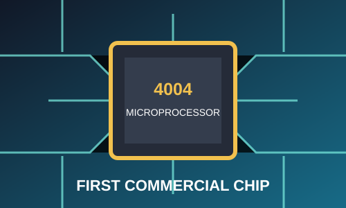
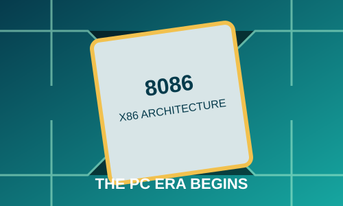
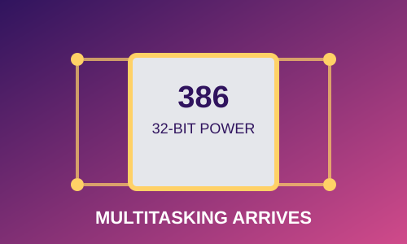
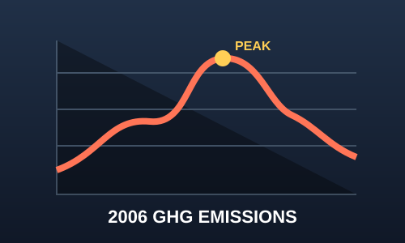
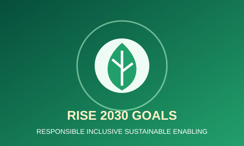
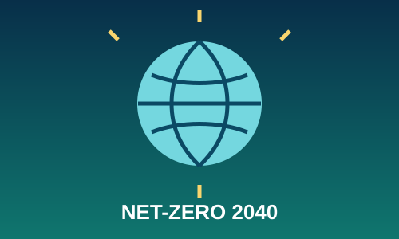
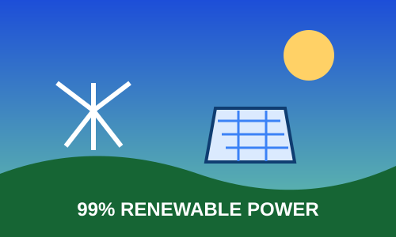
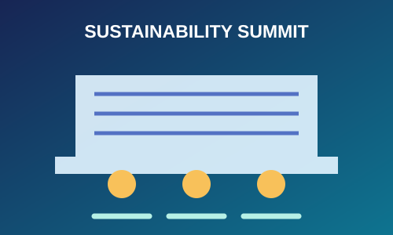

Innovation + Responsibility
Sustainability Through the Ages
Discover how Intel combines innovation and responsibility to build a more sustainable future for technology and our planet.
Discover how Intel combines innovation and responsibility to build a more sustainable future for technology and our planet.









Scroll through the timeline | Hover over a card to learn more!